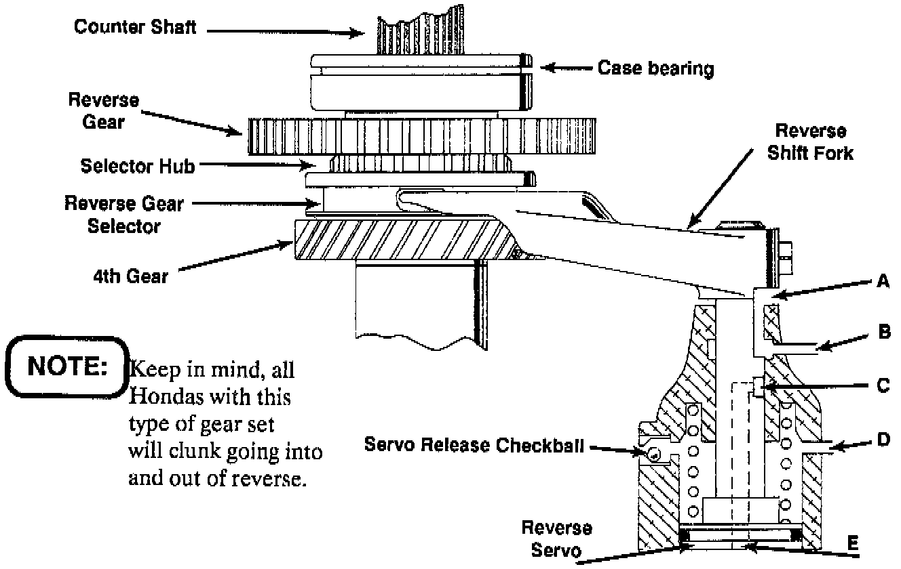
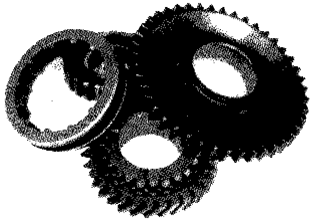
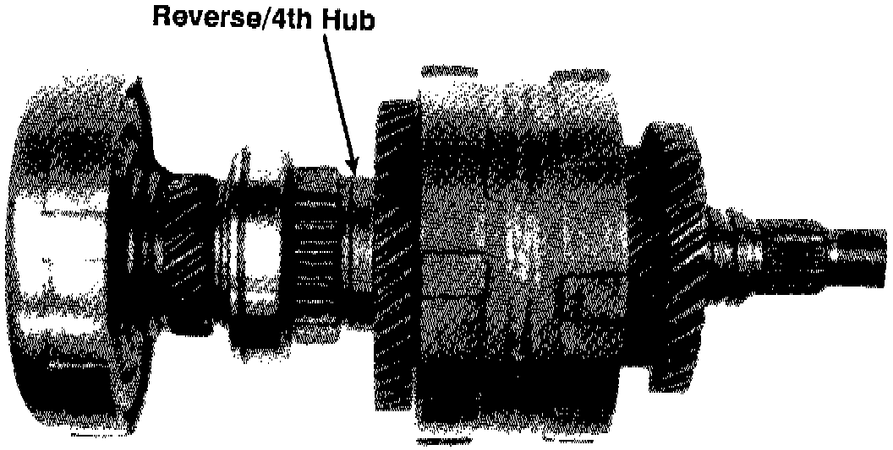
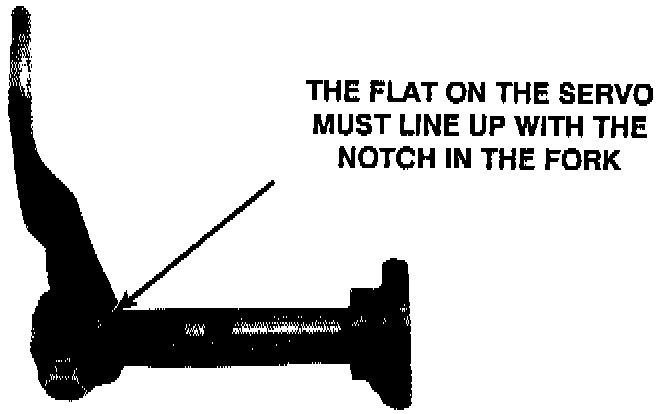
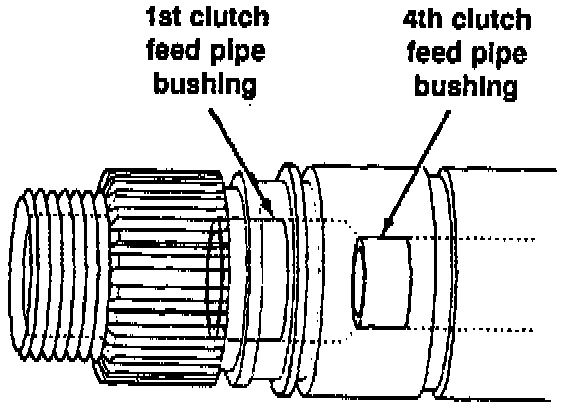

A/T - Noise Going Into or Out Of Reverse
TECHNICAL BULLETIN # 116TRANSMISSION: 4 Spd Automatic
SUBJECT: Noise
APPLICATION: Honda, Acura, Sterling
DATE: June 1992
4 Speed Automatics Noise going into and/or out of reverse

To fix a Honda that grinds in Reverse and/or out of reverse you first need to understand how it works. The normal position (i.e. park, neutral, drive, 3rd and 2nd) of the reverse/4th gear set is shown in the figure below. When the manual control valve is moved to the reverse position, oil charges the bottom of the reverse servo including port E located on the servo. As the servo moves up, port C & B will be connected. At this point, the reverse gear selector will be engaged to the reverse gear and the reverse servo oil can now flow out port B to apply the
4th clutch. When the manual control valve is moved out of reverse, pressure at port D will move the servo down to engage the 4th gear. As the servo approaches the gear position 4th clutch oil will exhaust thru port A.
The grinding occurs when the reverse gear selector is between the two gears. During this time the gear set is momentarily in neutral. If the gears start turning, you'll get a grind.
NEVER shift a Honda into or out of Reverse while the car is moving.
THINGS TO CHECK BEFORE A REBUILD
LINE PRESSURE
Low line pressure will slow the rate that the servo will move. The longer it takes to move the shift fork from one range to another, the greater the Opportunity for the gears to grind. Check bulletin # 090 for pressure specs.
WHAT TYPE OF OIL IS IN THE TRANSAXLE?
See if the transaxle has been serviced recently. Some oils like type "F" can cause the 4th clutch to drag. Honda oil works best.
CHECK TO MAKE SURE THE MAINSHAFT AND COUNTER SHAFT AREN'T BENT.
If you can get the end cover off, rotate the two shafts and make sure they're not bent. This can cause a mechanical bind.
THINGS TO CHECK DURING A REBUILD
1. CHECK THE REVERSE/4TH GEAR SET FOR WORN TEETH

Worn teeth on these parts are not normally the cause of the noise but the result of these gears grinding. It is important for the smooth operation of this transaxle that these parts not be worn. If they are worn replace the gear set.
2. 4TH CLUTCH CLEARANCE.
A tight 4th clutch pack will cause excessive drag. The clearance in the 4th clutch should be .016" - .024" on all models except AK: .016" - .028" and AS: .016"- .023" It may be to your advantage to favor clearances to the loose end or specs.
3. FRICTION MATERIAL
The type of friction material used will influence how the 4th clutch releases out of reverse. If the clutch doesn't break loose or if it drags, the transaxle will grind. Always use top quality frictions. When in doubt, use factory frictions. It is important to check the clutch plates for flatness.
4. CHECK THE 4TH/REVERSE HUB CLEARANCE

Assemble the mainshaft (including the case bearing) and tighten the nut to 25 lb ft. The Reverse/4th hub should have .003" - .006" endplay. If you don't have any clearance, you have a mis-assembly or a worn Reverse/4th bearing collar.
Note
Reverse/4th bearing collar is the part that the needle bearing rides on.
5. SERVO SHAFT & BORE
Make sure the servo shaft and bore are not scored. A damaged shaft or bore can bind the servo. The servo must be allowed to move quickly from one gear to another.
6. SERVO SHAFT BOLT

Make sure the servo has a shouldered bolt. Using a shouldered bolt on the servo will prevent you from bolting the servo shaft in backwards. Bolting the servo in backwards will restrict port "A" which is the 4th clutch exhaust out of reverse.
7. MAKE SURE THE SERVO CONTROL VALVE ISN'T STUCK
Some models have a servo control valve. This valve controls the rate of the servo apply & release.
Note
Models without a servo control valve use an orificing checkball.
8. SERVO RELEASE CHECKBALL
Make sure this checkball does not leak. If it does, the servo will not release fast enough. This will cause a grinding noise when you shift out of reverse.
9. 1st CLUTCH FEED PIPE BUSHING

Noise from Drive to Reverse can be caused by a worn 1st clutch feed pipe bushing. If this is so, there will be a small amount of oil pressure at the 4th gear tap in drive. (Check it with the wheels stationary.) This may also cause 4th clutch failure.